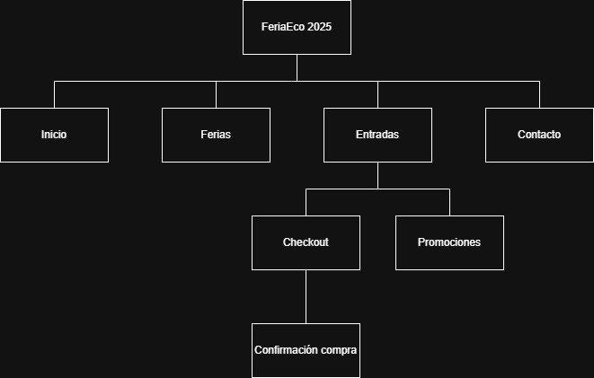

Texto Introductorio
Este trabajo se basa en el caso “Feria Sustentable Itinerante”, una iniciativa que promueve prácticas ecológicas en distintas ciudades. La propuesta del grupo es desarrollar un sitio web accesible, informativo y visualmente atractivo que facilite la difusión del evento y mejore la experiencia del usuario.
Actividad principal
La actividad principal de la organización es promover la sustentabilidad mediante una feria itinerante que recorre distintas ciudades de una provincia argentina, acercando productos ecológicos, talleres y propuestas educativas a la comunidad.
Objetivos del sitio web
El objetivo del sitio web es brindar toda la información necesaria sobre el evento (fechas, ubicaciones, horarios, actividades y stands), facilitar el acceso a promociones y compras online, y ofrecer una experiencia accesible, clara y atractiva para todo tipo de usuarios.
Concepto general
El concepto general del sitio se basa en un diseño visual natural y simple, con navegación intuitiva y elementos interactivos como mapas, formularios y galerías. Las estrategias de atracción incluyen contenido visual atractivo, actividades destacadas, promociones para familias y grupos, y acceso rápido desde dispositivos móviles.
Análisis del público objetivo
- Familias con hijos pequeños o adolescentes, interesadas en propuestas recreativas y educativas.
- Jóvenes que valoran la innovación, el consumo responsable y las experiencias comunitarias.
- Personas de todas las edades que buscan adoptar hábitos más sustentables.
Este público se caracteriza por un alto uso de medios digitales, sensibilidad ambiental y búsqueda de actividades significativas vinculadas al cuidado del planeta.
Identidad Visual Inicial
Paleta de colores: #9BD770, #66B032, #375F1B, #9C6902, #FEF3DC
Tipografías: Arial, sans-serif
Logo: En desarrollo
Mapa del sitio
Prototipo
Enlace a Figma o Penpot: Figma
Organización del equipo
- Camila de la Torre - UX/UI Designer
- Facundo Sole - Programador
- Tomas Emanuel Perez - Maquetador HTML/CSS
- Tomas Kupinski - Comunicador Web